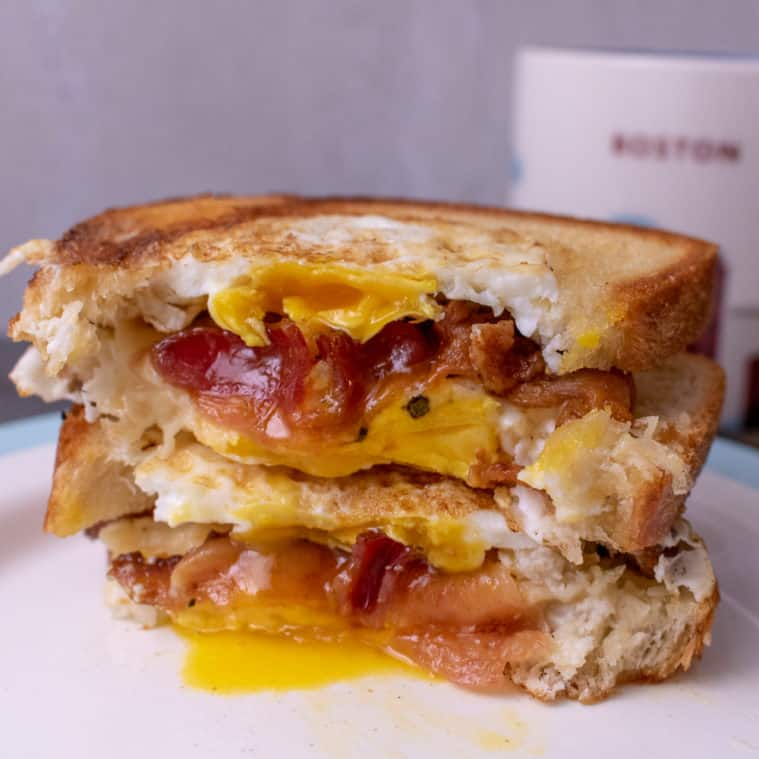

Back
Bacon, Egg & Cheese Sandwich

Description
A breakfast classic, the bacon, egg, and cheese is an incredibly flavorful meal for any time of day. One of the key things I feel that is lacking is a dressing or sauce to bring it together. For this, I use the egg yolk by leaving it whole during cooking and breaking it in the sandwich.
Ingredients
For this recipe you will need:
- Thick Cut Bacon
- Eggs
- Cheese (choose one you like)
- Bread (choose one you like
- Salt
- Pepper
Steps
For this recipe you will need to:
- Starting from a cold pan, lay the Thick Cut Bacon in one layer
- Set the heat to medium and cook making sure to turn frequently.
- Once the Thick Cut Bacon is cooked, remove and drain most of the oil from the pan, but leave enough to coat the pan.
- Crack the Eggs on the pan.
- Season with Salt and Pepper to taste.
- Place Bread on the pan alongside Eggs to toast
- Cover the pan to ensure the yolk cooks but does not harden. We want to make sure the yolk can still run.
- Once Eggs are finshed, assemble the sandwich in the pan layering eggs, cheese, and then bacon.
- Remove the sandwich from the pan to a plate and press down to break the yolks.
- Cut in half or leave whole and enjoy.